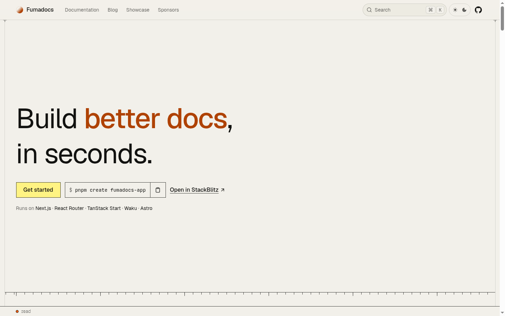

"The User Won't Read, They Will See."
Benjamin, we took every piece of your feedback and pushed past the newspaper limits. This iteration delivers:
- The Vector Face Duality: Interactive split illustration with pupil eye-tracking, glowing logic circuits, and analyst charts.
- Kinetic Rollout Narrative: Auto-rotating text transition between Software Architecture and Business Analysis without clicking.
- Projects as Primary Highlight: Rich visual cards with micro-previews, telemetry beacons, and zero walls of text.
- First-Glance Reach Out: Direct communication widget placed immediately after the hero with copy feedback.
- 100% Sans-Serif & Theme Adaptability: Built on your authentic Inter font and bound to CSS custom properties.
- Full-Route Navigation: Links lead to full pages (Trajectory, Outside Work, Archive) with zero jump-scroll confusion.
The Kinetic Dual-Face Cover
Evolves the Adham Dannaway concept into an interactive vector face with mouse eye-tracking, auto-rotating narrative progress bar, and visual project cards.
The Retro-Modern Canvas
Inspired by Fumadocs.dev: technical dot grid, auto-syncing perspective ticker, and sleek project cards with interactive spec details.
The Split Stage Cover
Dual-stage cockpit layout with smooth auto-cycling carousel, clean reach-out card, and balanced numbered dispatches.
Benchmark Audit Gallery
INSPIRATION ARTIFACTS
Adham Dannaway (Split Paradigm)
The iconic 50/50 duality anchor. In 2 seconds, visitors understand the hybrid discipline. Used as the inspiration for our interactive vector face.

Fumadocs.dev (Retro-Modern Tech)
Retro technical dot-grid, interactive micro-animations, and fast code/spec previews that keep the reader captivated without walls of text.

Mind Bubble Light Theme (#F4FAFA)
Your authentic light mint palette and Inter sans-serif typography. All 3 proposals directly bind to these CSS custom properties.
Recommended Next Steps
Proposal 01 (**The Kinetic Dual-Face Cover**) incorporates all your requirements: the animated vector face, the auto-rotating text transition, the reach-out widget directly below the hero, the curated projects as primary visual highlights, and full-route navigation.
Review the proposals in the stage above, and let me know your preferred composition so we can begin coding the final production components in Next.js 16 & React 19!